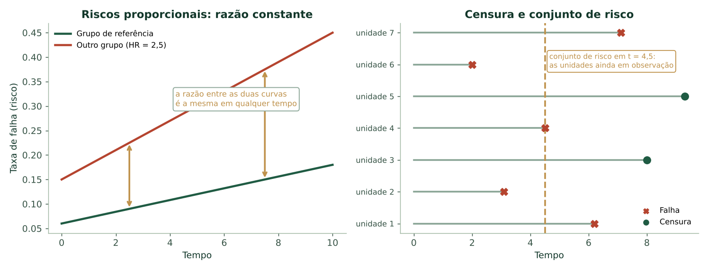
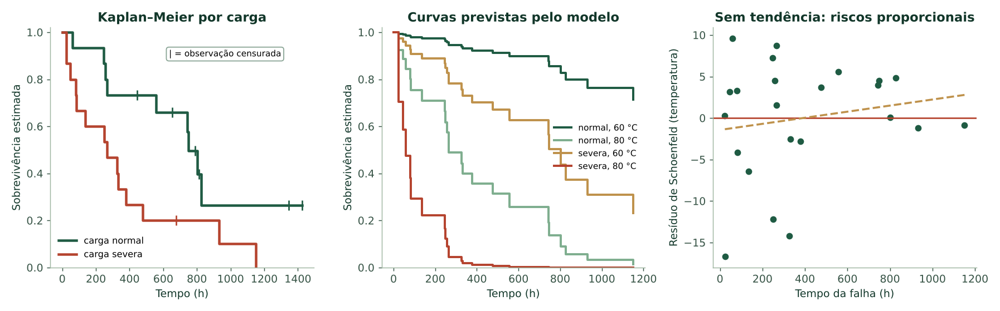

Regressão de Cox
Avalia como características se associam à taxa de falha ao longo do tempo, aproveitando observações censuradas.
Comece por aqui
Quanto tempo até a bomba falhar? Até o paciente apresentar recidiva? Até o cliente cancelar o contrato? Esse tipo de dado tem uma particularidade: ao fim do estudo, parte das unidades ainda não falhou. Descartá-las enviesa tudo; fingir que falharam no último dia, também. A regressão de Cox lida com essas observações censuradas e, ao mesmo tempo, mede o efeito de cada fator sobre o risco de falha.
O artigo de David Cox (1972) é um dos mais citados de toda a estatística. A ideia central, a verossimilhança parcial, permite estimar o efeito das covariáveis sem especificar como o risco varia ao longo do tempo: um ganho de generalidade raro em modelagem.
O que é o modelo
A função \(h(t)\) é a taxa de falha (ou risco): a propensão instantânea de falhar no instante \(t\), dado que a unidade chegou até ali. O modelo a separa em duas partes: \(h_0(t)\), o risco basal, que depende do tempo e fica sem forma especificada, e um fator multiplicativo que depende apenas das covariáveis. Como o risco basal é comum a todas as unidades, ele se cancela nas comparações, e os coeficientes podem ser estimados sem conhecê-lo.

Pressupostos e como verificá-los
| Pressuposto | Por que importa | Como verificar |
|---|---|---|
| Riscos proporcionais | A razão de risco entre dois perfis é constante no tempo; é a hipótese central. | Resíduos de Schoenfeld contra o tempo (cox.zph); curvas de Kaplan–Meier que não se cruzam; gráfico log-log. |
| Censura não informativa | Unidades censuradas devem ter o mesmo prognóstico das que seguem em observação. | Avalie o motivo da censura: fim do estudo é aceitável; retirada por piora não é. |
| Observações independentes | Condição dos erros-padrão. | Delineamento; para unidades agrupadas, use modelos de fragilidade ou variância robusta. |
| Forma funcional correta das covariáveis quantitativas | O efeito entra linearmente na escala log do risco. | Resíduos martingale contra a covariável; splines. |
| Eventos suficientes | A precisão depende do número de falhas, não do de unidades. | Referência usual: ao menos 10 eventos por covariável. |
| Poucos empates nos tempos | Muitos empates exigem aproximações. | O R usa a correção de Efron por padrão, adequada na maioria dos casos. |
Hipóteses e estatística de teste
Em que:
- \(h(t\mid\mathbf x)\)
- taxa de falha no instante t para o perfil de covariáveis \(\mathbf x\)
- \(h_0(t)\)
- risco basal, comum a todas as unidades e não especificado
- \(t_i,\ \delta_i\)
- tempo observado da unidade i e indicador de falha (1 = falhou, 0 = censurada)
- \(R(t_i)\)
- conjunto de risco: unidades ainda em observação imediatamente antes de \(t_i\)
- \(L\)
- verossimilhança parcial: considera apenas a ordem das falhas, não os tempos em si
- \(HR_j\)
- razão de risco (hazard ratio): fator que multiplica a taxa de falha por unidade de \(x_j\)
Exemplo numérico, passo a passo
Suponha o primeiro instante de falha de um estudo com 5 unidades ainda em risco, uma única covariável binária \(x\) e \(\beta=0{,}7\). A unidade que falha tem \(x=1\); entre as 5 em risco, duas têm \(x=1\) e três têm \(x=0\).
Numerador: \(e^{0{,}7\times1}=2{,}014\).
Denominador: \(2\times e^{0{,}7}+3\times e^{0}=2\times2{,}014+3=7{,}028\).
Contribuição: \(2{,}014/7{,}028=0{,}287\). Se não houvesse efeito (\(\beta=0\)), a contribuição seria \(1/5=0{,}200\): a falha de uma unidade de alto risco é mais provável sob \(\beta>0\).
A verossimilhança parcial é o produto de contribuições como essa, uma por falha observada. Repare que o instante exato da falha não entra na conta: só importa quem estava em risco e quem falhou.
Testes e intervalos
| Teste | Como é calculado | Observação |
|---|---|---|
| Razão de verossimilhanças | \(G=2(\ell_{modelo}-\ell_{nulo})\) | O mais confiável em amostras pequenas. |
| Wald | \(\mathbf b^{\top}\widehat{\operatorname{Var}}(\mathbf b)^{-1}\mathbf b\) | O que aparece coeficiente a coeficiente. |
| Escore (log-rank) | Derivada da log-verossimilhança em zero | Com uma covariável binária, equivale ao teste log-rank. |
Propriedades
- O modelo é semiparamétrico: a forma do risco basal fica livre, e só a parte das covariáveis é paramétrica.
- A verossimilhança parcial usa apenas a ordem dos tempos; transformações monotônicas do tempo não alteram as estimativas.
- \(HR=1\) indica ausência de efeito; \(HR>1\), risco maior (falha mais cedo); \(HR<1\), risco menor.
- A razão de risco é constante ao longo do tempo: é exatamente o que a hipótese de riscos proporcionais afirma.
- O risco basal pode ser estimado depois, pelo estimador de Breslow, quando se deseja prever curvas de sobrevivência.
- Covariáveis que mudam ao longo do tempo podem ser incorporadas, o que também é uma forma de contornar a violação dos riscos proporcionais.
Como interpretar os resultados
| Elemento | O que informa | Cuidado |
|---|---|---|
| HR = exp(b) | Fator multiplicativo da taxa de falha. | Não é razão de tempos de vida nem de probabilidades. |
| IC da HR | Precisão do efeito. | Se contém 1, o efeito não é distinguível de zero. |
| HR por variação relevante | exp(k·b) para um aumento de k unidades. | Mais informativo que o efeito por unidade. |
| Testes globais | Se o conjunto de covariáveis importa. | Prefira a razão de verossimilhanças. |
| cox.zph | Se a hipótese de riscos proporcionais se sustenta. | Valor-p pequeno indica efeito que muda com o tempo. |
| Curvas previstas | Tradução do modelo em probabilidades. | Dependem do risco basal estimado. |
Reporte o número de unidades e de eventos, as razões de risco com intervalos de confiança, o teste global e a verificação dos riscos proporcionais.
Como executar no R e em Python
Onde executar o código em Python
Não é preciso instalar nada: o Google Colab é um computador na nuvem, gratuito, que executa Python pelo navegador e já traz as bibliotecas usadas aqui (numpy, scipy e matplotlib).
coxph() pertence ao pacote survival (THERNEAU; GRAMBSCH, 2000), que acompanha a instalação padrão do R. A resposta é construída com Surv(tempo, evento), em que o indicador vale 1 para falha e 0 para censura. cox.zph() verifica os riscos proporcionais e survfit() produz as curvas. Para gráficos mais elaborados, o pacote survminer é a opção usual.
library(survival)
modelo <- coxph(Surv(tempo, falha) ~ carga + temp_c, data = dados)
summary(modelo)
cox.zph(modelo)
O código Python desta ficha faz as contas passo a passo com numpy e scipy, para que cada resultado possa ser acompanhado. No dia a dia, as bibliotecas statsmodels e lifelines, também disponíveis no Google Colab, oferecem esses modelos prontos.
Exemplo de aplicação
Contexto dos dados
Trinta bombas centrífugas foram acompanhadas em um ensaio de confiabilidade. Quinze operaram em carga normal e quinze em carga severa, cada uma a uma temperatura média registrada. Para cada bomba anotou-se o tempo em horas até a falha ou até o encerramento do acompanhamento, o que viesse primeiro. Sete bombas não falharam durante o ensaio: são as observações censuradas. Os dados são fictícios, criados para esta ficha.
Código em R
# Regressão de Cox: exemplo completo ----
# Pacote: survival (acompanha a instalação padrão do R)
library(survival)
# 1. Dados: ensaio de confiabilidade com 30 bombas centrífugas (dados fictícios)
dados <- data.frame(
tempo = c(1347, 790, 748, 1424, 827, 744, 265, 811, 257, 247, 557, 802, 59, 444, 655,
266, 678, 932, 136, 249, 23, 83, 80, 1151, 24, 477, 46, 326, 378, 332),
falha = c(0, 0, 1, 0, 1, 1, 1, 0, 1, 1, 1, 1, 1, 0, 0, 1, 0, 1, 1, 1, 1, 1, 1, 1, 1, 1, 1, 1, 1, 1),
carga = factor(rep(c("normal", "severa"), each = 15)),
temp = c(65, 67, 72, 70, 72, 72, 81, 58, 77, 80, 76, 67, 83, 56, 79,
73, 56, 65, 66, 60, 74, 68, 76, 66, 57, 76, 77, 57, 69, 69))
dados$temp_c <- dados$temp - 70 # temperatura centrada em 70 °C
table(dados$carga, dados$falha)
# 2. Kaplan-Meier por grupo e teste log-rank
km <- survfit(Surv(tempo, falha) ~ carga, data = dados)
summary(km, times = c(250, 500, 750, 1000))
survdiff(Surv(tempo, falha) ~ carga, data = dados)
# 3. Modelo de Cox
modelo <- coxph(Surv(tempo, falha) ~ carga + temp_c, data = dados)
summary(modelo)
# 4. Razões de risco para variações relevantes
exp(10 * coef(modelo)["temp_c"]) # efeito de +10 °C
exp(coef(modelo)["cargasevera"] + 20 * coef(modelo)["temp_c"])
# 5. Curvas de sobrevivência previstas pelo modelo
perfis <- data.frame(carga = factor(c("normal", "normal", "severa", "severa"),
levels = c("normal", "severa")),
temp_c = c(-10, 10, -10, 10))
plot(survfit(modelo, newdata = perfis), col = 1:4, lwd = 2,
xlab = "Tempo (h)", ylab = "Sobrevivência estimada")
legend("topright", c("normal 60 °C", "normal 80 °C", "severa 60 °C", "severa 80 °C"),
col = 1:4, lwd = 2, bty = "n")
# 6. Verificação de riscos proporcionais (resíduos de Schoenfeld)
zph <- cox.zph(modelo)
print(zph)
plot(zph)
# 7. Observações influentes (resíduos dfbeta)
plot(residuals(modelo, type = "dfbeta")[, 1], ylab = "dfbeta (carga)"); abline(h = 0, col = "red")
A mesma análise em Python, com os resultados
Cole o código em um notebook do Google Colab ↗ e execute com Shift+Enter. Os valores abaixo são a saída desse código.
# Bibliotecas: numpy, scipy e matplotlib (já instaladas no Google Colab)
import numpy as np
from scipy import stats, optimize
import matplotlib.pyplot as plt
# Dados: ensaio de confiabilidade com 30 bombas centrífugas (dados fictícios)
# tempo: horas até a falha ou até o fim do ensaio | falha: 1 = falhou, 0 = censurado
# carga: 0 = normal, 1 = severa | temp: temperatura média de operação (°C)
tempo = np.array([1347, 790, 748, 1424, 827, 744, 265, 811, 257, 247, 557, 802, 59, 444, 655,
266, 678, 932, 136, 249, 23, 83, 80, 1151, 24, 477, 46, 326, 378, 332.])
falha = np.array([0, 0, 1, 0, 1, 1, 1, 0, 1, 1, 1, 1, 1, 0, 0, 1, 0, 1, 1, 1, 1, 1, 1, 1, 1, 1, 1, 1, 1, 1.])
carga = np.repeat([0., 1.], 15)
temp = np.array([65, 67, 72, 70, 72, 72, 81, 58, 77, 80, 76, 67, 83, 56, 79,
73, 56, 65, 66, 60, 74, 68, 76, 66, 57, 76, 77, 57, 69, 69.])
n = len(tempo)
def logv_parcial(b, X, t, d):
"""Log-verossimilhança parcial de Cox com a correção de Efron para empates."""
eta = X @ b; total = 0.0
for tt in np.unique(t[d == 1]):
D = (t == tt) & (d == 1); R = t >= tt; m = D.sum()
soma_risco = np.exp(eta[R]).sum(); soma_falhas = np.exp(eta[D]).sum()
total += eta[D].sum() - sum(np.log(soma_risco - (l / m) * soma_falhas) for l in range(m))
return total
def hessiana(f, x, h=1e-4):
p = len(x); H = np.zeros((p, p))
for i in range(p):
for j in range(p):
e1 = np.zeros(p); e2 = np.zeros(p); e1[i] = h; e2[j] = h
H[i, j] = (f(x+e1+e2) - f(x+e1-e2) - f(x-e1+e2) + f(x-e1-e2)) / (4 * h * h)
return H
def cox(X, t, d, nomes):
f = lambda b: -logv_parcial(b, X, t, d)
res = optimize.minimize(f, np.zeros(X.shape[1]), method="BFGS")
cov = np.linalg.inv(hessiana(f, res.x)); ep = np.sqrt(np.diag(cov))
b = res.x; z = b / ep; p = 2 * stats.norm.sf(np.abs(z)); zc = stats.norm.ppf(0.975)
print(f"{'Termo':<10}{'Estimativa':>11}{'Erro-padrão':>13}{'z':>8}{'p-valor':>10}{'HR':>8}{'IC 95% de HR':>22}")
for nm, bi, ei, zi, pi in zip(nomes, b, ep, z, p):
print(f"{nm:<10}{bi:>11.4f}{ei:>13.4f}{zi:>8.3f}{pi:>10.4f}{np.exp(bi):>8.3f} [{np.exp(bi-zc*ei):>6.3f}; {np.exp(bi+zc*ei):>6.3f}]")
return dict(b=b, ep=ep, cov=cov, logv=-res.fun)
# 1. Descrição dos dados
print(f"n = {n} | falhas = {int(falha.sum())} | censuras = {int(n - falha.sum())}")
for g, nome in [(0, "carga normal"), (1, "carga severa")]:
m_ = carga == g
print(f"{nome}: n = {int(m_.sum())} | falhas = {int(falha[m_].sum())} | mediana dos tempos observados = {np.median(tempo[m_]):.0f} h")
# 2. Estimador de Kaplan-Meier por grupo
def kaplan_meier(t, d):
ts = np.unique(t[d == 1]); S = 1.0; curva = [(0.0, 1.0)]
for tt in ts:
em_risco = (t >= tt).sum(); falhas = ((t == tt) & (d == 1)).sum()
S *= 1 - falhas / em_risco; curva.append((tt, S))
return np.array(curva)
for g, nome in [(0, "carga normal"), (1, "carga severa")]:
km = kaplan_meier(tempo[carga == g], falha[carga == g])
abaixo = km[km[:, 1] <= 0.5]
mediana = abaixo[0, 0] if len(abaixo) else np.nan
print(f"{nome}: sobrevivência em 500 h = {km[km[:, 0] <= 500][-1, 1]:.3f} | tempo mediano = {mediana:.0f} h")
# 3. Modelo de Cox com os dois preditores (temperatura centrada em 70 °C)
X = np.column_stack([carga, temp - 70])
print()
m = cox(X, tempo, falha, ["carga", "temp-70"])
# 4. Testes globais
m0_logv = logv_parcial(np.zeros(2), X, tempo, falha)
G = 2 * (m["logv"] - m0_logv)
print(f"\nLog-verossimilhança parcial: nula = {m0_logv:.4f} | modelo = {m['logv']:.4f}")
print(f"Razão de verossimilhanças: G = {G:.3f}, gl = 2, p-valor = {stats.chi2.sf(G, 2):.3e}")
W = m["b"] @ np.linalg.inv(m["cov"]) @ m["b"]
print(f"Teste de Wald: {W:.3f}, gl = 2, p-valor = {stats.chi2.sf(W, 2):.3e}")
# 5. Razão de risco para variações relevantes
print(f"\nHR carga severa / normal = {np.exp(m['b'][0]):.3f}")
print(f"HR por +10 °C = {np.exp(10 * m['b'][1]):.3f}")
print(f"HR de uma bomba com carga severa a 80 °C em relação a carga normal a 60 °C = {np.exp(m['b'][0] + 20 * m['b'][1]):.2f}")
# 6. Sobrevivência estimada (risco basal de Breslow)
def sobrevivencia_basal(b, X, t, d):
eta = X @ b; ts = np.unique(t[d == 1]); H = 0.0; saida = [(0.0, 1.0)]
for tt in ts:
H += ((t == tt) & (d == 1)).sum() / np.exp(eta[t >= tt]).sum()
saida.append((tt, np.exp(-H)))
return np.array(saida)
S0 = sobrevivencia_basal(m["b"], X, tempo, falha)
print("\nSobrevivência estimada em 500 h (temperatura de 70 °C):")
S0_500 = S0[S0[:, 0] <= 500][-1, 1]
for g, nome in [(0, "carga normal"), (1, "carga severa")]:
print(f" {nome}: {S0_500 ** np.exp(m['b'][0] * g):.3f}")
# 7. Verificação de riscos proporcionais: resíduos de Schoenfeld contra o tempo
def schoenfeld(b, X, t, d):
eta = X @ b; res = []; tempos = []
for i in np.where(d == 1)[0]:
R = t >= t[i]; w = np.exp(eta[R]); media = (X[R] * w[:, None]).sum(axis=0) / w.sum()
res.append(X[i] - media); tempos.append(t[i])
return np.array(tempos), np.array(res)
tt, sch = schoenfeld(m["b"], X, tempo, falha)
print("\nResíduos de Schoenfeld: correlação com o posto do tempo")
for j, nm in enumerate(["carga", "temp-70"]):
r, p = stats.spearmanr(stats.rankdata(tt), sch[:, j])
print(f" {nm:<8} rho = {r:>7.4f}, p-valor = {p:.4f}")
# 8. Gráficos: Kaplan-Meier por grupo e resíduos de Schoenfeld
fig, ax = plt.subplots(1, 2, figsize=(11, 4))
for g, nome in [(0, "carga normal"), (1, "carga severa")]:
km = kaplan_meier(tempo[carga == g], falha[carga == g])
ax[0].step(km[:, 0], km[:, 1], where="post", label=nome)
ax[0].set_xlabel("Tempo (h)"); ax[0].set_ylabel("Sobrevivência estimada"); ax[0].legend()
ax[1].scatter(tt, sch[:, 1]); ax[1].axhline(0, color="red")
ax[1].set_xlabel("Tempo da falha (h)"); ax[1].set_ylabel("Resíduo de Schoenfeld (temperatura)")
plt.show()
Resultados da execução
n = 30 | falhas = 23 | censuras = 7 carga normal: n = 15 | falhas = 9 | mediana dos tempos observados = 744 h carga severa: n = 15 | falhas = 14 | mediana dos tempos observados = 266 h carga normal: sobrevivência em 500 h = 0.733 | tempo mediano = 748 h carga severa: sobrevivência em 500 h = 0.200 | tempo mediano = 266 h Termo Estimativa Erro-padrão z p-valor HR IC 95% de HR carga 1.4744 0.4753 3.102 0.0019 4.368 [ 1.721; 11.090] temp-70 0.1272 0.0446 2.849 0.0044 1.136 [ 1.040; 1.239] Log-verossimilhança parcial: nula = -62.5030 | modelo = -55.0208 Razão de verossimilhanças: G = 14.964, gl = 2, p-valor = 5.630e-04 Teste de Wald: 12.703, gl = 2, p-valor = 1.744e-03 HR carga severa / normal = 4.368 HR por +10 °C = 3.566 HR de uma bomba com carga severa a 80 °C em relação a carga normal a 60 °C = 55.56 Sobrevivência estimada em 500 h (temperatura de 70 °C): carga normal: 0.722 carga severa: 0.241 Resíduos de Schoenfeld: correlação com o posto do tempo carga rho = -0.1196, p-valor = 0.5869 temp-70 rho = 0.1067, p-valor = 0.6279

| Grupo | n | Falhas | Tempo mediano (Kaplan–Meier) | Sobrevivência em 500 h |
|---|---|---|---|---|
| Carga normal | 15 | 9 | 748 h | 0,733 |
| Carga severa | 15 | 14 | 266 h | 0,200 |
| Termo | Estimativa | Erro-padrão | z | Valor-p | HR | IC 95% |
|---|---|---|---|---|---|---|
| Carga severa | 1,4744 | 0,4753 | 3,102 | 0,0019 | 4,368 | [1,721; 11,090] |
| Temperatura (−70 °C) | 0,1272 | 0,0446 | 2,849 | 0,0044 | 1,136 | [1,040; 1,239] |
| Elemento | Valor | Leitura |
|---|---|---|
| Razão de verossimilhanças | G = 14,96; 2 g.l.; p = 0,00056 | O conjunto de fatores importa. |
| Wald global | 12,70; 2 g.l.; p = 0,0017 | |
| HR por +10 °C | 3,566 | Dez graus a mais multiplicam a taxa de falha por 3,6. |
| HR: severa a 80 °C contra normal a 60 °C | 55,6 | Combinação dos dois efeitos. |
| Sobrevivência prevista em 500 h, a 70 °C | 0,722 (normal) e 0,241 (severa) | |
| Schoenfeld, carga | rho = −0,120; p = 0,587 | Sem tendência temporal. |
| Schoenfeld, temperatura | rho = 0,107; p = 0,628 | Sem tendência temporal. |
Leitura: bombas em carga severa têm taxa de falha cerca de 4,4 vezes maior que as de carga normal, mantida a temperatura. A temperatura também pesa: cada grau aumenta o risco em 13,6%, o que acumula em 3,6 vezes a cada dez graus. Os dois efeitos se multiplicam, de modo que uma bomba em carga severa a 80 °C tem risco 56 vezes maior que uma em carga normal a 60 °C. Os resíduos de Schoenfeld não apontam violação dos riscos proporcionais, e as curvas de Kaplan–Meier não se cruzam.
Duas ressalvas de leitura. Com 23 falhas e duas covariáveis, a amostra está no limite do recomendado, o que explica o intervalo largo da razão de risco da carga (de 1,7 a 11,1). E a razão de risco não se traduz diretamente em tempo de vida: dizer que o risco quadruplica não significa que a bomba dure um quarto do tempo.
Erros comuns
| Erro | Como evitar |
|---|---|
| Descartar as observações censuradas | É o principal erro: elimina justamente as unidades de maior duração. |
| Ler HR como razão de tempos médios | HR é razão de taxas instantâneas. |
| Não verificar os riscos proporcionais | Use cox.zph e observe as curvas de Kaplan–Meier. |
| Usar regressão linear no tempo até a falha | Ignora a censura e a assimetria dos tempos. |
| Contar unidades em vez de eventos | A precisão vem do número de falhas. |
| Interpretar o risco basal | Ele não é estimado no ajuste e não tem interpretação direta. |
| Ignorar censura informativa | Se a saída do estudo se relaciona ao prognóstico, as estimativas ficam enviesadas. |
Alternativas e fluxo de trabalho
| Procedimento | Quando preferir |
|---|---|
| Kaplan–Meier e log-rank | Descrição e comparação de grupos, sem ajuste por covariáveis. |
| Cox com covariáveis dependentes do tempo | O efeito muda ao longo do acompanhamento. |
| Cox estratificado | O risco basal difere entre estratos, mas os efeitos são comuns. |
| Modelos paramétricos (Weibull, exponencial, log-normal) | Interesse em extrapolar além do período observado ou em prever vida útil. |
| Modelos de tempo de falha acelerado (AFT) | Interesse em razões de tempos, e não de riscos. |
| Modelos de fragilidade | Unidades agrupadas (mesma planta, mesmo lote). |
| Wilcoxon–Gehan | Diferenças concentradas nos tempos iniciais. |
- Organize os dados com tempo e indicador de evento.
- Descreva com Kaplan–Meier e compare grupos pelo log-rank.
- Ajuste o modelo de Cox com as covariáveis de interesse.
- Verifique os riscos proporcionais e observações influentes.
- Interprete por razões de risco e curvas previstas.
Referências desta ficha
- COX, David R. Regression models and life-tables. Journal of the Royal Statistical Society: Series B, v. 34, n. 2, p. 187-220, 1972.
- THERNEAU, Terry M.; GRAMBSCH, Patricia M. Modeling survival data: extending the Cox model. New York: Springer, 2000. (Pacote
survival.) - EFRON, Bradley. The efficiency of Cox’s likelihood function for censored data. Journal of the American Statistical Association, v. 72, n. 359, p. 557-565, 1977.
- KALBFLEISCH, John D.; PRENTICE, Ross L. The statistical analysis of failure time data. 2. ed. Hoboken: Wiley, 2002.
- GRAMBSCH, Patricia M.; THERNEAU, Terry M. Proportional hazards tests and diagnostics based on weighted residuals. Biometrika, v. 81, n. 3, p. 515-526, 1994.
- COLOSIMO, Enrico A.; GIOLO, Suely R. Análise de sobrevivência aplicada. São Paulo: Blucher, 2006.
- R CORE TEAM. R: a language and environment for statistical computing. Vienna: R Foundation for Statistical Computing, 2026. Disponível em: https://www.r-project.org/.
- POSIT TEAM. RStudio: integrated development environment for R. Boston: Posit Software, PBC. Disponível em: https://posit.co/download/rstudio-desktop/.
- VIRTANEN, Pauli et al. SciPy 1.0: fundamental algorithms for scientific computing in Python. Nature Methods, v. 17, p. 261-272, 2020. DOI: 10.1038/s41592-019-0686-2. (Funções do módulo
scipy.stats.) - HARRIS, Charles R. et al. Array programming with NumPy. Nature, v. 585, p. 357-362, 2020. DOI: 10.1038/s41586-020-2649-2.
- HUNTER, John D. Matplotlib: a 2D graphics environment. Computing in Science & Engineering, v. 9, n. 3, p. 90-95, 2007.
- GOOGLE. Google Colaboratory. Disponível em: https://colab.research.google.com/.
- Os dados do exemplo são fictícios e foram criados pelo autor. As figuras desta ficha foram elaboradas pelo autor.

Prof. Dr. Cássius Henrique Xavier Oliveira
Professor · ICTIN/UFLA · Estatística, Confiabilidade e Ciência de Dados.
Conheça minha trajetória e projetos →